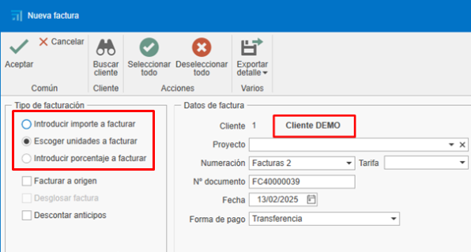

Fatturazione
1. Introduzione
Questo manuale descrive il processo di creazione, modifica e gestione delle fatture. Imparerai a usare i filtri, creare fatture a partire dai preventivi, gestire gli incassi e applicare gli eventuali aggiustamenti.
2. Creare fatture dai preventivi
Per creare fatture a partire da preventivi, segui questi passaggi:
2.1. Creare un preventivo
- Aggiungi righe con i prodotti o servizi (es. finestre, lamiere).
-
Definisci quantità e prezzi.

2.2. Generare la fattura
- Accedi alla sezione di fatturazione.
-
Seleziona "Crea fattura" a partire dal preventivo.

-
Scegli il tipo di fattura:
-
Fattura anticipata: consente di incassare un importo parziale e fatturare il resto successivamente.

-
Fattura per unità: fattura solo le unità selezionate da fatturare. Successivamente obbliga a continuare a fatturare nello stesso modo (impostazione predefinita).

-
Inserire importo da fatturare: consente di incassare un importo specifico del totale della fattura. Successivamente obbliga a continuare a fatturare nello stesso modo.

-
Inserire percentuale da fatturare: consente di incassare una percentuale specifica del totale della fattura. Successivamente obbliga a continuare a fatturare nello stesso modo.

-
-
Fattura a origen è fattura per certificato.
2.3. Inviare la fattura al cliente
-
Una volta creata, puoi visualizzare la fattura in anteprima prima di inviarla o stamparla.


-
Invia la fattura al cliente via e-mail o stampala.

Nota: La fattura può essere generata dal preventivo, dall'ordine o dalla bolla. È consigliabile generare le fatture sempre dallo stesso documento — ad esempio dall'ordine, se è lì che si raggiunge l'accordo con il cliente — per una migliore gestione e tracciabilità.
2.4. Stato e osservazioni
- Creando la fattura nella scheda Stato e osservazioni verranno mostrati campi come Data, Scadenze, ritenuta, RE, Sconto P.P.
3. Gestione degli incassi
Per gestire gli incassi delle fatture:
3.1. Segnare le fatture come incassate
-
Dal documento della fattura è possibile contrassegnare la fattura come incassata.

-
In alternativa, accedi all'elenco delle scadenze da "Documenti di vendita".

-
Filtra le fatture in attesa di incasso.

-
Seleziona le fatture e contrassegnale come incassate. Per selezionare più fatture usa Ctrl + Click o Ctrl + A per selezionarle tutte.

-
Indica la modalità di pagamento (bonifico, cambiale, ecc.), la data di incasso e la data di registrazione in conto. I campi evidenziati in rosso sono obbligatori. Questi campi possono essere configurati nella sezione "Forme di pagamento".

Nota: In questa sezione, come in altri elenchi di documenti, è possibile applicare filtri a piacere.
-
Nell'elenco dei documenti di vendita, apparirà nella tracciabilità del preventivo lo stato della fattura come "Incassata".

3.2. Report sugli incassi
-
Accetta il preventivo per generare un ordine (nel caso in cui la fatturazione sia partita dal preventivo).

-
Usa il report "Stato fatturazione e incassi" per vedere lo stato delle fatture (incassate, pendenti, percentuale di fatturazione, ecc.). Filtra per il preventivo da visualizzare.


-
Usa il report di elenco fatture per visualizzare le informazioni della fattura (data, cliente, imponibile, IVA, totale, ecc.). Questo report può essere generato per intervallo di date o applicando il filtro corrente dell'elenco.


4. Fatturazione da ordini
Per fatturare da ordini, segui questi passaggi:
4.1. Fatturazione da ordine
-
È possibile fatturare direttamente dall'ordine, seguendo gli stessi passaggi del preventivo.
-
Un'altra modalità è creare una produzione dall'ordine e indicare la quantità di finestre da includere in quella fase di produzione.


-
Una volta confermato che le finestre indicate nella fase "Producción 1" sono state prodotte, puoi tornare all'ordine e creare una fattura specificando la quantità da fatturare.
Nota: Si consiglia di fatturare sempre dall'ordine, poiché è lì che si formalizza l'accordo con il cliente.
-
Se detrai l'intero importo della fattura (unità) e hai emesso e incassato una fattura anticipata, al momento della conferma della fattura apparirà un messaggio per confermare lo sconto dell'anticipo.

-
Confermando, l'anticipo sarà detratto dalla fattura.

-
Generando la fattura per l'invio al cliente vedrai il dettaglio di quanto è stato incassato e detratto.

5. Fatturazione dalle bolle
Se lavori con bolle, segui questi passaggi:
5.1. Creare bolle dagli ordini
-
Genera bolle per le produzioni effettuate.

Nota: Verifica che prezzi e descrizioni siano corretti.
5.2. Fatturare dalle bolle
- Accedi all'ordine corrispondente.
-
Seleziona "Crea fattura" dalla bolla e segui gli stessi passaggi precedenti.

Nota: Controlla che prezzi e unità corrispondano a quanto concordato con il cliente; eventuali modifiche in produzione (es. variazione misura finestra) possono influire sul prezzo e differire dall'ordine.
6. Forme e modalità di pagamento
Configura le forme e le modalità di pagamento secondo le tue esigenze:

6.1. Forme di pagamento
-
Definisci le condizioni di pagamento (es. 30 giorni, 60 giorni, 90 giorni). È possibile creare più forme con configurazioni diverse.

-
Configura se è necessario richiedere la modalità di pagamento, la data effettiva di scadenza, la data di registrazione e la banca. Questa configurazione si rifletterà nell'elenco delle scadenze quando la fattura viene contrassegnata come incassata e i campi obbligatori (in rosso) devono essere compilati.

-
Imposta il numero di scadenze e le percentuali di pagamento.

6.2. Modalità di pagamento
-
Indica come verrà eseguito il pagamento (bonifico, cambiale, contanti).

-
Configura se è necessario richiedere la data di incasso, la banca o la data di registrazione in conto.

7. Rettifiche e annullamenti
Se hai bisogno di correggere o annullare una fattura:
7.1. Fatture appena create
-
Se la fattura non è stata inviata, eliminala e ricreala con la stessa numerazione. Ci sono diversi modi per eliminare la fattura:
-
Dall'elenco vendite, trova la fattura, fai clic destro sulla riga e seleziona "Elimina".

-
Dalla fattura, aprila e eliminala dalla scheda "Fattura", fai clic destro e seleziona "Elimina".

-
Dalla fattura, in alto a sinistra, clicca sul logo ENBLAU e seleziona "Elimina".

-
7.2. Fatture già inviate
-
Se la fattura è già stata inviata, emetti una fattura rettificativa.

-
Assicurati che soddisfi i requisiti fiscali.
8. Conferma fattura (Proforma)
-
Per generare un documento di conferma (proforma) prima di emettere la fattura al cliente, puoi farlo da: Documenti di Vendita → Fatturazione → Fatturazione Ordini.

- Si aprirà una finestra Nuova fattura dove cercare il cliente per cui generare la proforma:

- Nella parte inferiore appariranno gli ordini in attesa di fatturazione per quel cliente nella scheda "Tipo di fattura e intestazione". Dopodiché, nella colonna Fatturare con un doppio clic seleziona gli ordini che desideri generare:

- Scegli il "Tipo di fatturazione" per generare il documento:

- Nella scheda "Dettagli fatture" potrai vedere tutte le righe di ciascun ordine e, dalla barra superiore, usare l'opzione Esporta dettaglio per esportare in .pdf o .xls:

- Esempio in PDF:

Gestione filtri Usa i filtri e i filtri personalizzati per ottimizzare la ricerca negli elenchi. Per maggiori informazioni, segui questo link: 4. Gestión de filtros
9. Sconto per pagamento anticipato
Lo sconto per pagamento anticipato è una riduzione applicata all'importo totale della fattura quando il cliente effettua il pagamento entro un termine breve stabilito. Ha lo scopo di incentivare il pagamento anticipato e facilitare il flusso di cassa del fornitore.
9.1. Applicazione consigliata
Si consiglia di includere lo sconto già nell'ordine, nella sezione "Stato e osservazioni", affinché venga riportato correttamente nella fattura finale, sia essa generata dall'ordine o dalla bolla.

⚠️ Importante: Applicare lo sconto direttamente dalla fattura può generare disallineamenti nei report come "Stato fatturazione e incassi", poiché l'importo fatturato potrebbe non corrispondere ai valori originariamente previsti.
9.2. Calcolo dello sconto
Esiste una opzione di configurazione che determina come viene applicato lo sconto:
- Se l'opzione è attivata, lo sconto si applica sul totale comprensivo di IVA.
-
Se l'opzione è disattivata, lo sconto si applica solo sull'imponibile e l'IVA viene calcolata sull'importo netto.

10. Fatturazione delle bolle
10.1. Acquisti
Nella sezione Documenti di acquisto esiste un'opzione dedicata alla Fatturazione delle bolle.
Selezionandola:
- Si apre una finestra dove puoi scegliere il fornitore.
- Verrà mostrato un elenco di bolle, dove è possibile:
- Filtrare per progetto, date, documenti, ecc.
-
Selezionare le bolle da fatturare segnando la casella nella colonna Seleziona.

10.2. Vendite
Nel modulo Documenti di vendita è presente un'opzione simile per la fatturazione delle bolle. Accedendo:
- Si apre una finestra dove puoi indicare il progetto e/o il cliente.
- Il sistema mostrerà l'elenco delle bolle corrispondenti.
-
Con un doppio clic sulla casella della colonna “Da fatturare”, puoi selezionare facilmente i documenti da includere nella fattura.


11. Fatturazione elettronica (FACTURAE)
-
Per generare una fattura elettronica da ENBLAU, è necessario che in Aziende, Clienti e Metodi di pagamento siano compilati alcuni campi obbligatori.
Azienda: I campi sono Partita IVA, Indirizzo, Città, CAP, Provincia e Paese. Dal menu: Configurazione - Generale - Azienda.


Nota: Se non esiste un'azienda nella sezione Azienda, crearla con le stesse informazioni presenti in Configurazione - Generale.
Clienti: I campi sono Ragione Sociale, Partita IVA/Codice fiscale, Codice Paese e Tipo di persona (J: Giuridica, F: Fisica). Dal menu: Vendite - Clienti.


Metodi di pagamento: Il campo Codice Legale. Dal menu: Vendite - Documenti di vendita - Configurazione - Metodi di pagamento.


Nota: Il codice legale dei metodi di pagamento è un codice fornito dallo studio contabile o dall'ufficio amministrativo dell'azienda.
Procedura:
-
Apri la fattura che desideri emettere come fattura elettronica.
-
Nella barra superiore della fattura, clicca su Fatturazione e seleziona Esporta per Facturae dal menu a tendina.

-
Indica il percorso dove salvare la fattura elettronica in formato XML.

-
Al salvataggio si aprirà una finestra per selezionare una firma certificata valida. Se necessario, clicca su Altre opzioni, seleziona il certificato e premi Accetta.


-
Dopo aver premuto Accetta, verrà mostrato un messaggio che conferma l'esportazione avvenuta correttamente nel percorso indicato.

⚠️ Importante! Una volta esportata la fattura elettronica non potrà essere eliminata né modificata.
-
Dopo l'esportazione del file XML, accedi al Validatore e visualizzatore di fatture per caricare il file e verificarne il contenuto.

-
Attiva le opzioni Formato Facturae e Firma della fattura per procedere con la validazione.

Stampando la relazione di una fattura elettronica da ENBLAU, in alto a destra verrà visualizzato un codice QR contenente informazioni rilevanti della fattura (NIF, nome, indirizzo, cliente, numero fattura, ecc.).


12. Considerazioni finali
-
Mantieni gli ordini aggiornati: tutti i documenti devono essere collegati a un ordine per facilitare il controllo dei costi e della fatturazione.
-
Esportazione contabile: a fine mese esporta i dati contabili dall'elenco vendite o acquisti.
-
Domande e supporto: in caso di dubbi, contatta il team di supporto via e-mail.
Questo manuale ti aiuterà a gestire la fatturazione in modo efficiente e a evitare errori comuni.
 Español
Español
 English
English
 Italiano
Italiano
 Português
Português